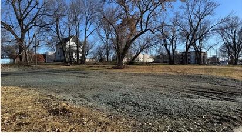

Underutilized land. Mission-driven organizations. People who need a stable place to live. MicroLiving connects those pieces through a coordinated housing delivery model.

Underutilized land in Kansas City, pictured in the source materials.
Underutilized land. Untapped possibility.
The starting point
What communities have. What communities need.
MicroLiving Midwest’s mission is to transform underutilized assets into attainable housing through scalable construction delivery.
Our starting point is the potential in resources that already exist: a parcel of land, an institutional holding, a funding partnership, or an organization ready to bring a housing vision to life.
Our role is to connect the plan, the right execution partners, and a disciplined delivery process—so those resources can work toward a shared community goal.
The scale of the opportunity
Planning context from the supplied 2026 project materials.
17,000+
vacant lots in Kansas City, as reported in the source overview
64,000
affordable housing units needed, as reported in the source overview
These are figures reported in the supplied 2026 website / pitch-deck snapshot, not a verified current inventory. Original studies, definitions, and measurement periods were not supplied.
Two organizations. Distinct roles.
Housing delivery. Community support.
MicroLiving Midwest and Embrace Your Shine work together in the campus model, but they do different work.
Construction & development coordination
MicroLiving Midwest.
Coordinates the physical housing project—from development planning to construction partners, project oversight, and quality-gated delivery.
MicroLiving orchestrates execution and connects payment decisions to verified work through the go/no-go structure.
Community services & fiscal partnership
Embrace Your Shine.
Brings the resident-facing homes, community, and pathway programming described in the campus vision.
In the supplied campus model, Embrace Your Shine is identified as the grant-receiving fiscal agent. Its community services are distinct from MicroLiving’s construction offering.
A partnership—not an exclusive model. Other organizations can work with MicroLiving. Each project’s roles, community services, and funding relationships are established around that project’s needs.
Embrace Your Shine’s campus vision
Homes. Community. Pathway.
These belong to the community-services story—not MicroLiving’s construction service menu.
Homes +
The campus concept describes compact, 320-square-foot cottages for young people ages 16–30. MicroLiving’s role is the physical housing delivery; resident-facing programming belongs with the community partner.
Community +
Integrated workspaces and a community garden are part of the proposed campus environment—places to work, grow, and connect.
Pathway +
Pathway to Purpose is the personal-development bootcamp described in the campus vision. This is Embrace Your Shine programming, not a MicroLiving construction service.